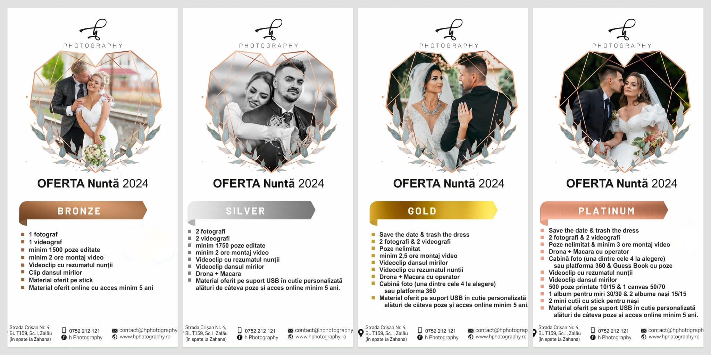

SERVICII:
- Foto/Video
- Foto/Video 360
- Foto/Video Aerian
- Foto/Video Save the date
- Foto/Video Trash the dress
#MadeWithLove
☎:0752 212 121

SERVICII:
TRASH THE DRESS:

Ce înseamnă trash the dress?
Deși conceptul Trash the dress este destul de nou în România, există numeroase cupluri care s-au bucurat de o ședință foto uimitoare, într-o locație inedită. Deși mireasa poartă rochia specială, iar mirele costumul, ședința foto Trash the dress trebuie să contrasteze cu ținutele de nuntă. Astfel, nu trebuie să mai privești rochia ca pe un obiect vestimentar prețios, care nu are voie să se murdărească, ci să-ți permiți să mergi cu picioarele prin nisip, să colorezi rochia cu markere sau să te așezi în iarbă.
Desigur, rochia de mireasă este distrusă într-un sens artistic, pentru ca fotograful să surprindă imagini senzaționale. Cu ajutorul conceptului Trash the dress, te eliberezi de prejudecăți și poți da frâu liber imaginației, alături de persoana iubită.
EVENIMENTE
Participam la:
PACHETE
